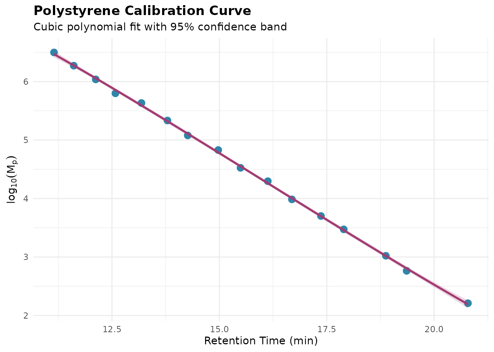
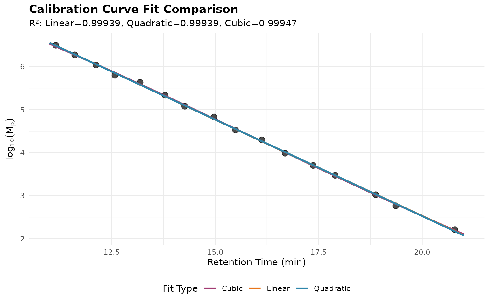
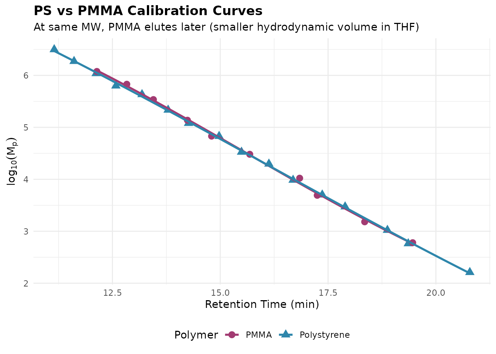

Size Exclusion Chromatography Analysis with measure.sec
Source:vignettes/sec-analysis.Rmd
sec-analysis.RmdIntroduction
Size Exclusion Chromatography (SEC), also known as Gel Permeation Chromatography (GPC), is a fundamental technique for characterizing the molecular weight distribution of polymers, proteins, and other macromolecules. The measure.sec package extends the measure package with specialized preprocessing steps for SEC/GPC data analysis. This vignette demonstrates how to:
- Process multi-detector SEC data (RI, UV/DAD, MALS, LALS, RALS, DLS)
- Calculate molecular weight averages and distributions
- Analyze copolymer composition
- Quantify protein aggregates
- Perform quality control checks
Setup
library(measure)
#> Loading required package: recipes
#> Loading required package: dplyr
#>
#> Attaching package: 'dplyr'
#> The following objects are masked from 'package:stats':
#>
#> filter, lag
#> The following objects are masked from 'package:base':
#>
#> intersect, setdiff, setequal, union
#>
#> Attaching package: 'recipes'
#> The following object is masked from 'package:stats':
#>
#> step
library(measure.sec)
library(recipes)
library(dplyr)
library(tidyr)
library(purrr)
library(ggplot2)The measure.sec Data Model
The package uses the measure framework, where
chromatographic signals are stored as nested tibbles. Each sample has a
measure_tbl containing:
-
location: Elution time or volume -
value: Detector response
Multiple samples are combined into a measure_list
column.
Example Dataset
The package includes sec_triple_detect, a synthetic
dataset representing multi-detector SEC analysis:
data(sec_triple_detect, package = "measure.sec")
# Overview of the dataset
glimpse(sec_triple_detect)
#> Rows: 24,012
#> Columns: 11
#> $ sample_id <chr> "PS-1K", "PS-1K", "PS-1K", "PS-1K", "PS-1K", "PS-1K",…
#> $ sample_type <chr> "standard", "standard", "standard", "standard", "stan…
#> $ polymer_type <chr> "polystyrene", "polystyrene", "polystyrene", "polysty…
#> $ elution_time <dbl> 5.00, 5.01, 5.02, 5.03, 5.04, 5.05, 5.06, 5.07, 5.08,…
#> $ ri_signal <dbl> 6.926392e-04, 0.000000e+00, 3.199253e-04, 4.197175e-0…
#> $ uv_signal <dbl> 0.0002034583, 0.0000000000, 0.0000000000, 0.000000000…
#> $ mals_signal <dbl> 3.370385e-05, 3.483481e-05, 3.102092e-05, 3.261962e-0…
#> $ known_mw <dbl> 1000, 1000, 1000, 1000, 1000, 1000, 1000, 1000, 1000,…
#> $ known_dispersity <dbl> 1.05, 1.05, 1.05, 1.05, 1.05, 1.05, 1.05, 1.05, 1.05,…
#> $ dn_dc <dbl> 0.185, 0.185, 0.185, 0.185, 0.185, 0.185, 0.185, 0.18…
#> $ extinction_coef <dbl> 1.2, 1.2, 1.2, 1.2, 1.2, 1.2, 1.2, 1.2, 1.2, 1.2, 1.2…
# Sample types included
sec_triple_detect |>
distinct(sample_id, sample_type, polymer_type) |>
print(n = 12)
#> # A tibble: 12 × 3
#> sample_id sample_type polymer_type
#> <chr> <chr> <chr>
#> 1 PS-1K standard polystyrene
#> 2 PS-10K standard polystyrene
#> 3 PS-50K standard polystyrene
#> 4 PS-100K standard polystyrene
#> 5 PS-500K standard polystyrene
#> 6 PMMA-Low sample pmma
#> 7 PMMA-Med sample pmma
#> 8 PMMA-High sample pmma
#> 9 PEG-5K sample peg
#> 10 PEG-20K sample peg
#> 11 Copoly-A sample copolymer
#> 12 Copoly-B sample copolymerBasic Workflow: Single Detector Analysis
Let’s start with a simple RI detector workflow for polystyrene standards:
# Filter to PS standards
ps_standards <- sec_triple_detect |>
filter(polymer_type == "polystyrene")
# Create the preprocessing recipe
# Note: The formula specifies which columns to use and sample_id as grouping
rec <- recipe(
ri_signal + elution_time + dn_dc + known_mw ~ sample_id,
data = ps_standards
) |>
update_role(sample_id, new_role = "id") |>
# Convert to measure format
step_measure_input_long(
ri_signal,
location = vars(elution_time),
col_name = "ri"
) |>
# Apply baseline correction
step_sec_baseline(measures = "ri") |>
# Process RI detector with dn/dc
step_sec_ri(measures = "ri", dn_dc_column = "dn_dc") |>
# Calculate molecular weight averages
step_sec_mw_averages(mw_column = "known_mw")
# Prep and bake
prepped <- prep(rec)
result <- bake(prepped, new_data = NULL)
# View results
result |>
select(sample_id, Mn, Mw, Mz, dispersity)Conventional Calibration
Conventional (relative) calibration uses narrow molecular weight standards to establish the relationship between elution time and molecular weight. This is the most common approach for routine polymer analysis.
Calibration Standards
The package includes comprehensive polystyrene and PMMA calibration standards:
# Load polystyrene calibration standards
data(sec_ps_standards, package = "measure.sec")
# View the standards (16 standards from 162 Da to 3.15 MDa)
sec_ps_standards |>
select(standard_name, mp, log_mp, retention_time, dispersity) |>
print(n = 8)
#> # A tibble: 16 × 5
#> standard_name mp log_mp retention_time dispersity
#> <chr> <dbl> <dbl> <dbl> <dbl>
#> 1 PS-3150000 3150000 6.50 11.2 1.04
#> 2 PS-1870000 1870000 6.27 11.6 1.04
#> 3 PS-1090000 1090000 6.04 12.1 1.03
#> 4 PS-630000 630000 5.80 12.6 1.04
#> 5 PS-430000 430000 5.63 13.2 1.04
#> 6 PS-216000 216000 5.33 13.8 1.03
#> 7 PS-120000 120000 5.08 14.3 1.03
#> 8 PS-67500 67500 4.83 15.0 1.03
#> # ℹ 8 more rowsVisualizing the Calibration Curve
Before fitting, it’s good practice to visualize the standards:
ggplot(sec_ps_standards, aes(retention_time, log_mp)) +
geom_point(size = 3, color = "#2E86AB") +
geom_smooth(
method = "lm",
formula = y ~ poly(x, 3),
se = TRUE,
color = "#A23B72",
fill = "#A23B72",
alpha = 0.2
) +
labs(
x = "Retention Time (min)",
y = expression(log[10](M[p])),
title = "Polystyrene Calibration Curve",
subtitle = "Cubic polynomial fit with 95% confidence band"
) +
theme_minimal() +
theme(
plot.title = element_text(face = "bold"),
axis.title = element_text(size = 11)
)
Building a Calibration Curve
Use step_sec_conventional_cal() to fit the calibration
and apply it to samples:
# Prepare standards for the step (needs 'retention' and 'log_mw' columns)
ps_cal <- sec_ps_standards |>
select(retention = retention_time, log_mw = log_mp)
# Filter to a polystyrene sample for demonstration
ps_sample <- sec_triple_detect |>
filter(sample_id == "PS-50K")
# Build the calibration recipe
# Note: Use explicit formula with sample_id as the grouping variable
rec_cal <- recipe(
ri_signal + elution_time + dn_dc ~ sample_id,
data = ps_sample
) |>
update_role(sample_id, new_role = "id") |>
step_measure_input_long(
ri_signal,
location = vars(elution_time),
col_name = "ri"
) |>
step_sec_baseline(measures = "ri") |>
step_sec_conventional_cal(
standards = ps_cal,
fit_type = "cubic",
output_col = "log_mw",
extrapolation = "none"
) |>
step_sec_mw_averages(measures = "log_mw")
# Prep and bake
prepped <- prep(rec_cal)
result <- bake(prepped, new_data = NULL)
# View molecular weight results
result |>
select(sample_id, mw_mn, mw_mw, mw_mz, mw_dispersity)Assessing Calibration Quality
The tidy() method provides comprehensive diagnostics for
evaluating calibration quality:
# Get calibration diagnostics
diagnostics <- tidy(prepped, number = 3) # step_sec_conventional_cal is step 3
# Overview metrics
diagnostics |>
select(fit_type, n_standards, r_squared, rmse_log_mw, max_abs_pct_deviation)
# Access per-standard residuals
std_results <- diagnostics$standard_results[[1]]
std_results |>
select(
location,
actual_log_mw,
predicted_log_mw,
residual_log_mw,
pct_deviation
)Key quality metrics:
| Metric | Good Value | Description |
|---|---|---|
| R² | > 0.999 | Coefficient of determination |
| RMSE | < 0.02 | Root mean square error in log(MW) |
| Max % Deviation | < 5% | Largest deviation at any standard |
| Dispersity | < 1.10 | Standards should be narrow |
Comparing Fit Types
Different polynomial orders may be appropriate depending on column behavior:
# Compare linear, quadratic, and cubic fits
library(tidyr)
fits <- tibble(
fit_type = c("Linear", "Quadratic", "Cubic"),
degree = c(1, 2, 3)
) |>
mutate(
predictions = map(degree, function(d) {
model <- lm(log_mp ~ poly(retention_time, d), data = sec_ps_standards)
tibble(
retention_time = seq(11, 21, by = 0.1),
log_mp = predict(model, newdata = tibble(retention_time = seq(11, 21, by = 0.1)))
)
}),
r_squared = map_dbl(degree, function(d) {
model <- lm(log_mp ~ poly(retention_time, d), data = sec_ps_standards)
summary(model)$r.squared
})
)
fit_curves <- fits |>
unnest(predictions)
ggplot() +
geom_point(
data = sec_ps_standards,
aes(retention_time, log_mp),
size = 3,
alpha = 0.7
) +
geom_line(
data = fit_curves,
aes(retention_time, log_mp, color = fit_type),
linewidth = 1
) +
scale_color_manual(
values = c("Linear" = "#E8751A", "Quadratic" = "#2E86AB", "Cubic" = "#A23B72")
) +
labs(
x = "Retention Time (min)",
y = expression(log[10](M[p])),
color = "Fit Type",
title = "Calibration Curve Fit Comparison",
subtitle = sprintf(
"R²: Linear=%.5f, Quadratic=%.5f, Cubic=%.5f",
fits$r_squared[1], fits$r_squared[2], fits$r_squared[3]
)
) +
theme_minimal() +
theme(
legend.position = "bottom",
plot.title = element_text(face = "bold")
)
Polymer-Specific Calibration
Conventional calibration is polymer-specific because different polymers have different hydrodynamic volumes at the same molecular weight:
data(sec_pmma_standards, package = "measure.sec")
# Combine PS and PMMA for comparison
combined <- bind_rows(
sec_ps_standards |> mutate(polymer = "Polystyrene"),
sec_pmma_standards |> mutate(polymer = "PMMA")
)
ggplot(combined, aes(retention_time, log_mp, color = polymer, shape = polymer)) +
geom_point(size = 3) +
geom_smooth(
method = "lm",
formula = y ~ poly(x, 3),
se = FALSE,
linewidth = 1
) +
scale_color_manual(values = c("Polystyrene" = "#2E86AB", "PMMA" = "#A23B72")) +
labs(
x = "Retention Time (min)",
y = expression(log[10](M[p])),
color = "Polymer",
shape = "Polymer",
title = "PS vs PMMA Calibration Curves",
subtitle = "At same MW, PMMA elutes later (smaller hydrodynamic volume in THF)"
) +
theme_minimal() +
theme(
legend.position = "bottom",
plot.title = element_text(face = "bold")
)
Key insight: Using a PS calibration for PMMA samples will underestimate molecular weight. For cross-polymer analysis, use universal calibration with Mark-Houwink parameters.
Multi-Detector SEC Workflow
For more accurate molecular weight determination, multi-detector SEC uses RI for concentration and MALS for absolute molecular weight:
# Multi-detector SEC workflow for absolute molecular weight
# Note: MALS processing requires additional detector configuration
rec_multi <- recipe(
ri_signal + uv_signal + mals_signal + elution_time + dn_dc + extinction_coef ~ sample_id,
data = sec_triple_detect
) |>
update_role(sample_id, new_role = "id") |>
# Convert each detector to measure format
step_measure_input_long(
ri_signal,
location = vars(elution_time),
col_name = "ri"
) |>
step_measure_input_long(
uv_signal,
location = vars(elution_time),
col_name = "uv"
) |>
step_measure_input_long(
mals_signal,
location = vars(elution_time),
col_name = "mals"
) |>
# Correct inter-detector delays
step_sec_detector_delay(
reference = "ri",
delay_volumes = c(uv = -0.05, mals = 0.10)
) |>
# Apply baseline correction
step_sec_baseline(measures = c("ri", "uv", "mals")) |>
# Process detectors
step_sec_ri(measures = "ri", dn_dc_column = "dn_dc") |>
step_sec_uv(measures = "uv", extinction_column = "extinction_coef") |>
step_sec_mals(measures = "mals", dn_dc_column = "dn_dc") |>
# Convert to concentration
step_sec_concentration(measures = "ri", detector = "ri") |>
# Calculate MW averages from MALS-derived MW
step_sec_mw_averages(mw_column = "mw_mals")
prepped_multi <- prep(rec_multi)
result_multi <- bake(prepped_multi, new_data = NULL)Copolymer Composition Analysis
The UV/RI ratio can reveal compositional heterogeneity across the molecular weight distribution:
# Filter to copolymer samples
copolymers <- sec_triple_detect |>
filter(polymer_type == "copolymer")
rec_comp <- recipe(
ri_signal + uv_signal + elution_time ~ sample_id,
data = copolymers
) |>
update_role(sample_id, new_role = "id") |>
step_measure_input_long(ri_signal, location = vars(elution_time), col_name = "ri") |>
step_measure_input_long(uv_signal, location = vars(elution_time), col_name = "uv") |>
step_sec_baseline(measures = c("ri", "uv")) |>
# Calculate UV/RI ratio
step_sec_uv_ri_ratio(uv_col = "uv", ri_col = "ri", smooth = TRUE) |>
# Calculate composition (requires known response factors)
step_sec_composition(
uv_col = "uv",
ri_col = "ri",
component_a_uv = 1.0, # UV response factor for component A
component_a_ri = 0.185, # RI response factor for component A
component_b_uv = 0.1, # UV response factor for component B
component_b_ri = 0.084 # RI response factor for component B
)
prepped_comp <- prep(rec_comp)
result_comp <- bake(prepped_comp, new_data = NULL)
# The result contains:
# - uv_ri_ratio: Point-by-point UV/RI ratio
# - composition_a: Weight fraction of component A at each pointProtein SEC: Aggregate Quantitation
For protein therapeutics, SEC is used to quantify high molecular weight species (HMWS/aggregates) and low molecular weight species (LMWS/fragments):
# Create protein-like data (using UV at 280 nm)
protein_data <- sec_triple_detect |>
filter(sample_type == "sample") |>
head(1)
rec_protein <- recipe(
uv_signal + elution_time ~ sample_id,
data = protein_data
) |>
update_role(sample_id, new_role = "id") |>
step_measure_input_long(uv_signal, location = vars(elution_time), col_name = "uv") |>
step_sec_baseline(measures = "uv") |>
# Quantify aggregates with manual peak boundaries
step_sec_aggregates(
measures = "uv",
monomer_start = 10, # Monomer peak start time
monomer_end = 14, # Monomer peak end time
method = "manual"
)
prepped_protein <- prep(rec_protein)
result_protein <- bake(prepped_protein, new_data = NULL)
# Results include:
# - purity_hmws: % high MW species (before monomer)
# - purity_monomer: % main peak
# - purity_lmws: % low MW species (after monomer)
result_protein |>
select(sample_id, purity_hmws, purity_monomer, purity_lmws)Molecular Weight Distribution
Generate differential and cumulative molecular weight distributions:
rec_mwd <- recipe(
ri_signal + elution_time + dn_dc + known_mw ~ sample_id,
data = sec_triple_detect
) |>
update_role(sample_id, new_role = "id") |>
step_measure_input_long(ri_signal, location = vars(elution_time), col_name = "ri") |>
step_sec_baseline(measures = "ri") |>
step_sec_ri(measures = "ri", dn_dc_column = "dn_dc") |>
# Add MW distribution curves
step_sec_mw_distribution(
signal_col = "ri",
mw_column = "known_mw",
output_type = "both" # "differential", "cumulative", or "both"
)
prepped_mwd <- prep(rec_mwd)
result_mwd <- bake(prepped_mwd, new_data = NULL)
# The result contains:
# - mwd_differential: dw/d(logM) vs logM
# - mwd_cumulative: cumulative weight fraction vs logMQuality Control Functions
The package provides functions for chromatographic system suitability testing:
Peak Resolution
# Calculate USP resolution between two peaks
Rs <- measure_sec_resolution(
retention_1 = 8.5,
retention_2 = 10.0,
width_1 = 0.3,
width_2 = 0.35,
method = "usp"
)
cat("Resolution (Rs):", round(Rs, 2), "\n")
#> Resolution (Rs): 4.62Plate Count
# Calculate theoretical plates
N <- measure_sec_plate_count(
retention = 10.0,
width = 0.25,
width_type = "half_height"
)
cat("Theoretical plates:", round(N), "\n")
#> Theoretical plates: 8864System Suitability
# Comprehensive system suitability testing
peaks <- data.frame(
name = c("dimer", "monomer"),
retention = c(8.5, 10.0),
width = c(0.3, 0.35),
area = c(5, 95)
)
sst <- measure_sec_suitability(
peaks = peaks,
reference_peaks = c("dimer", "monomer")
)
print(sst)
#> SEC System Suitability Test
#> ==================================================
#>
#> Overall Status: FAILED
#>
#> Results:
#> --------------------------------------------------
#> resolution : 4.615385 (>= 1.5) [PASS]
#> plate count : 4522.0 (>= 5000) [FAIL]
#> --------------------------------------------------Polymer Analysis: Mark-Houwink Parameters
Estimate Mark-Houwink parameters from intrinsic viscosity data:
# Molecular weight and intrinsic viscosity data
mw <- c(10000, 25000, 50000, 100000, 250000)
iv <- 0.0001 * mw^0.7 # Simulated data
mh <- measure_mh_parameters(mw, iv)
#> Warning in summary.lm(fit): essentially perfect fit: summary may be unreliable
print(mh)
#> Mark-Houwink Parameters
#> ========================================
#>
#> K = 1.0000e-04
#> a = 0.700
#>
#> R-squared: 1.0000
#> Data points: 5
#> MW range: 10000 - 250000
#>
#> Equation: [eta] = K * M^aBranching Analysis
Calculate branching indices for branched polymers:
# Compare branched polymer to linear reference
mw <- c(100000, 200000, 500000)
rg_branched <- c(10, 15, 25)
rg_linear <- c(12, 18, 32)
g <- measure_branching_index(
mw = mw,
rg = rg_branched,
reference = data.frame(mw = mw, rg = rg_linear),
method = "g"
)
print(g)
# g < 1 indicates branching (smaller Rg than linear)Exporting Results
Slice-by-Slice Data
Extract point-by-point chromatographic data:
slices <- measure_sec_slice_table(
result,
measures = c("ri", "mw"),
sample_id = "sample_id",
pivot = TRUE # Wide format with one column per measure
)
head(slices)Summary Table
Generate a summary table for reporting:
summary <- measure_sec_summary_table(
result,
sample_id = "sample_id",
digits = 0
)
print(summary)Complete Workflow Example
Here’s a complete workflow for analyzing polymer standards:
library(measure)
library(measure.sec)
library(recipes)
# Load data
data(sec_triple_detect, package = "measure.sec")
# Create comprehensive recipe with explicit formula
rec_complete <- recipe(
ri_signal + uv_signal + mals_signal + elution_time + dn_dc + extinction_coef + known_mw + polymer_type ~ sample_id,
data = sec_triple_detect
) |>
update_role(sample_id, new_role = "id") |>
# Input conversion
step_measure_input_long(ri_signal, location = vars(elution_time), col_name = "ri") |>
step_measure_input_long(uv_signal, location = vars(elution_time), col_name = "uv") |>
step_measure_input_long(mals_signal, location = vars(elution_time), col_name = "mals") |>
# Preprocessing
step_sec_detector_delay(reference = "ri", delay_volumes = c(uv = -0.05, mals = 0.10)) |>
step_sec_baseline(measures = c("ri", "uv", "mals")) |>
# Detector processing
step_sec_ri(measures = "ri", dn_dc_column = "dn_dc") |>
step_sec_uv(measures = "uv", extinction_column = "extinction_coef") |>
step_sec_mals(measures = "mals", dn_dc_column = "dn_dc") |>
step_sec_concentration(measures = "ri", detector = "ri") |>
# Molecular weight calculations
step_sec_mw_averages(mw_column = "known_mw") |>
step_sec_mw_fractions(mw_column = "known_mw", cutoffs = c(10000, 100000)) |>
# Composition analysis
step_sec_uv_ri_ratio(uv_col = "uv", ri_col = "ri")
# Process
prepped_complete <- prep(rec_complete)
result_complete <- bake(prepped_complete, new_data = NULL)
# View molecular weight results
result_complete |>
select(sample_id, polymer_type, Mn, Mw, Mz, dispersity) |>
print(n = 12)
# Generate summary
summary <- measure_sec_summary_table(result_complete, sample_id = "sample_id")
print(summary)Available Steps Reference
| Step | Category | Description |
|---|---|---|
step_sec_detector_delay() |
Preprocessing | Correct inter-detector delays |
step_sec_baseline() |
Preprocessing | SEC-optimized baseline correction |
step_sec_ri() |
Detector | RI detector with dn/dc |
step_sec_uv() |
Detector | UV detector with extinction coefficient |
step_sec_dad() |
Detector | Diode array detector (multi-wavelength UV) |
step_sec_mals() |
Detector | Multi-angle light scattering |
step_sec_lals() |
Detector | Low-angle light scattering |
step_sec_rals() |
Detector | Right-angle light scattering |
step_sec_dls() |
Detector | Dynamic light scattering |
step_sec_viscometer() |
Detector | Differential viscometer |
step_sec_concentration() |
Calculation | Signal to concentration |
step_sec_intrinsic_visc() |
Calculation | Intrinsic viscosity |
step_sec_mw_averages() |
MW | Mn, Mw, Mz, dispersity |
step_sec_mw_fractions() |
MW | MW fractions above/below cutoffs |
step_sec_mw_distribution() |
MW | Differential/cumulative MWD |
step_sec_conventional_cal() |
Calibration | Narrow standard calibration |
step_sec_universal_cal() |
Calibration | Universal calibration |
step_sec_uv_ri_ratio() |
Composition | UV/RI ratio |
step_sec_composition() |
Composition | Copolymer composition |
step_sec_aggregates() |
Protein | HMWS/monomer/LMWS quantitation |
See Also
For focused how-to guides on specific workflows:
- Getting Started - Introduction and basic workflow
- Multi-Detector SEC - MALS, viscometer, and absolute MW
- Protein SEC Analysis - Biopharm aggregate/fragment analysis
- Copolymer Composition - UV/RI ratio methods
- Calibration Management - Save/load calibrations
- System Suitability - QC metrics and SST
Session Info
sessionInfo()
#> R version 4.5.2 (2025-10-31)
#> Platform: x86_64-pc-linux-gnu
#> Running under: Ubuntu 24.04.3 LTS
#>
#> Matrix products: default
#> BLAS: /usr/lib/x86_64-linux-gnu/openblas-pthread/libblas.so.3
#> LAPACK: /usr/lib/x86_64-linux-gnu/openblas-pthread/libopenblasp-r0.3.26.so; LAPACK version 3.12.0
#>
#> locale:
#> [1] LC_CTYPE=C.UTF-8 LC_NUMERIC=C LC_TIME=C.UTF-8
#> [4] LC_COLLATE=C.UTF-8 LC_MONETARY=C.UTF-8 LC_MESSAGES=C.UTF-8
#> [7] LC_PAPER=C.UTF-8 LC_NAME=C LC_ADDRESS=C
#> [10] LC_TELEPHONE=C LC_MEASUREMENT=C.UTF-8 LC_IDENTIFICATION=C
#>
#> time zone: UTC
#> tzcode source: system (glibc)
#>
#> attached base packages:
#> [1] stats graphics grDevices utils datasets methods base
#>
#> other attached packages:
#> [1] ggplot2_4.0.1 purrr_1.2.0 tidyr_1.3.2
#> [4] measure.sec_0.0.0.9000 measure_0.0.1.9001 recipes_1.3.1
#> [7] dplyr_1.1.4
#>
#> loaded via a namespace (and not attached):
#> [1] gtable_0.3.6 xfun_0.55 bslib_0.9.0
#> [4] lattice_0.22-7 vctrs_0.6.5 tools_4.5.2
#> [7] generics_0.1.4 parallel_4.5.2 tibble_3.3.0
#> [10] pkgconfig_2.0.3 Matrix_1.7-4 data.table_1.18.0
#> [13] RColorBrewer_1.1-3 S7_0.2.1 desc_1.4.3
#> [16] lifecycle_1.0.4 compiler_4.5.2 farver_2.1.2
#> [19] textshaping_1.0.4 codetools_0.2-20 htmltools_0.5.9
#> [22] class_7.3-23 sass_0.4.10 yaml_2.3.12
#> [25] prodlim_2025.04.28 pillar_1.11.1 pkgdown_2.2.0
#> [28] jquerylib_0.1.4 MASS_7.3-65 cachem_1.1.0
#> [31] gower_1.0.2 rpart_4.1.24 nlme_3.1-168
#> [34] parallelly_1.46.0 lava_1.8.2 tidyselect_1.2.1
#> [37] digest_0.6.39 future_1.68.0 listenv_0.10.0
#> [40] labeling_0.4.3 splines_4.5.2 fastmap_1.2.0
#> [43] grid_4.5.2 cli_3.6.5 magrittr_2.0.4
#> [46] utf8_1.2.6 survival_3.8-3 future.apply_1.20.1
#> [49] withr_3.0.2 scales_1.4.0 lubridate_1.9.4
#> [52] timechange_0.3.0 rmarkdown_2.30 globals_0.18.0
#> [55] nnet_7.3-20 timeDate_4051.111 ragg_1.5.0
#> [58] evaluate_1.0.5 knitr_1.51 hardhat_1.4.2
#> [61] mgcv_1.9-3 rlang_1.1.6 Rcpp_1.1.0
#> [64] glue_1.8.0 ipred_0.9-15 jsonlite_2.0.0
#> [67] R6_2.6.1 systemfonts_1.3.1 fs_1.6.6